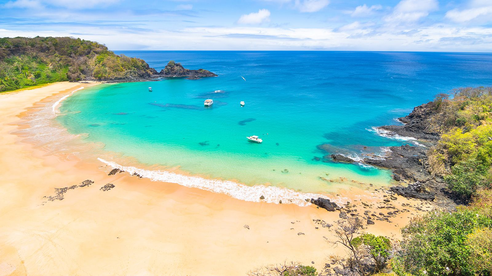
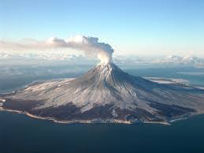
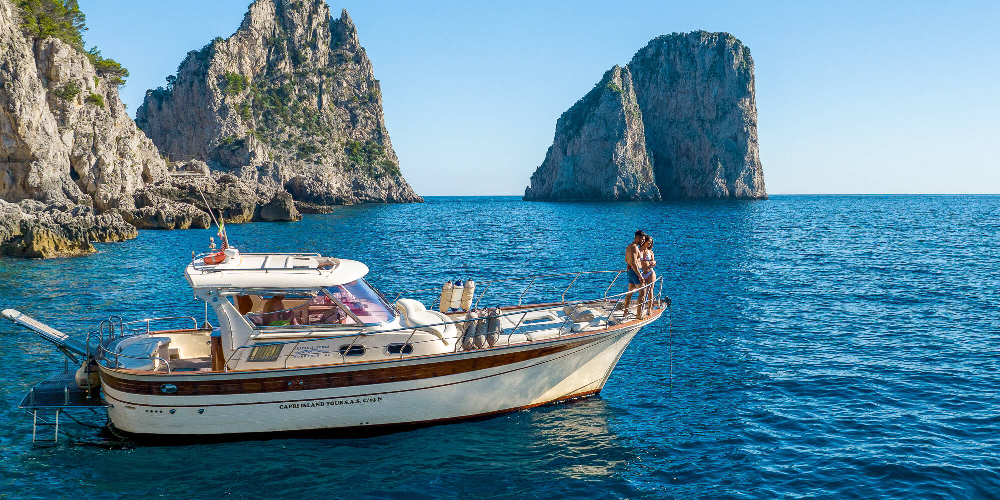

Yellow Leaf Bay Beaches
Relax on Taniti's white sandy beaches and enjoy beautiful ocean views.

Rainforest Adventures
Explore tropical trails, wildlife, and exciting zip-line experiences.

Volcano Tours
Visit Taniti's active volcano and experience the island's unique landscape.
Merriton Landing
Discover shopping, dining, entertainment, and nightlife in Taniti's newest district.

Island Tours
Take guided boat and bus tours to explore Taniti's most popular attractions.